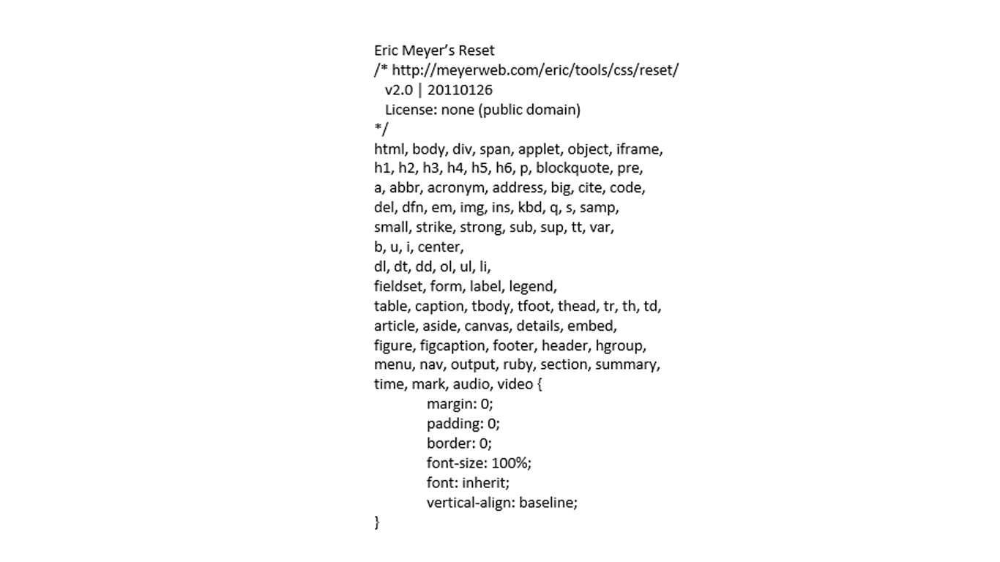
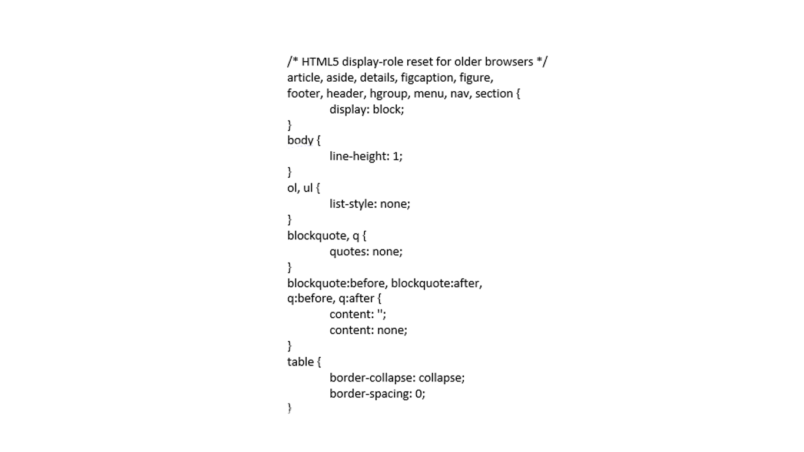

Reset CSS
08 April
Tips & Tricks
- The basic reset *{margin: 0px; padding: 0px;}
- Browsers vary with regards to default values. To ensure consistency remains from browser may be beneficial to do more than the removal of all margin and padding.


For more information, please refer to: